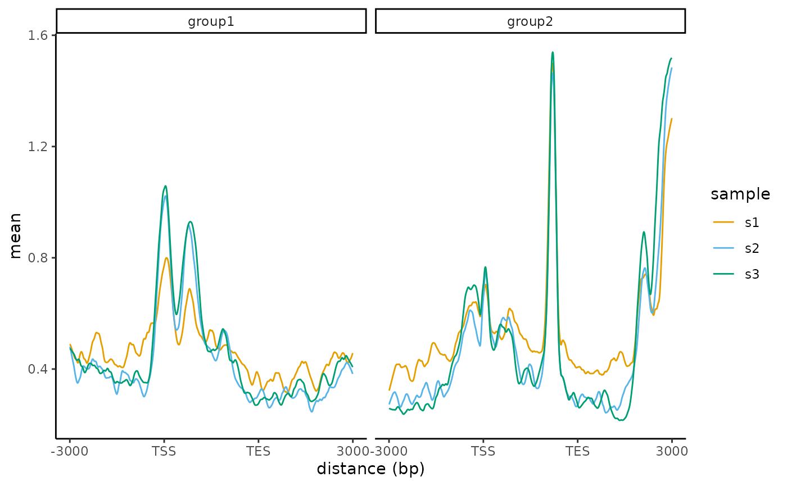
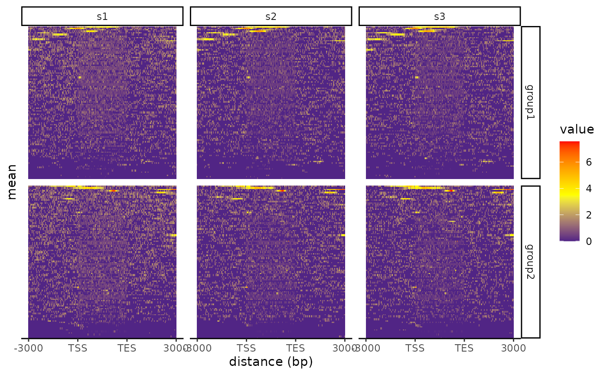

deepToolsDownstream.Rmd
library(deepToolsDownstream)
file <- system.file("extdata", "count.gz", package= "deepToolsDownstream")
## step 1 import file
se <- importCount(file)
## step 2 plots
## plot profile
p <- plotProfile(se)
library(S4Vectors)
library(colorBlindness)
library(ggplot2)
cols <- safeColors[-1][seq_along(metadata(se)$sample_labels)]
names(cols) <- metadata(se)$sample_labels
plot(p + scale_color_manual(values = cols))
## plot heatmap
plotHeatmap(se,
fill_gradient =
scale_fill_gradient2(
low = "darkblue", mid = "yellow",
high = "red", midpoint = 3.5),
yaxis_breaks="100033817", #The position to highlight
yaxis_label="geneA") # the lable to highlight